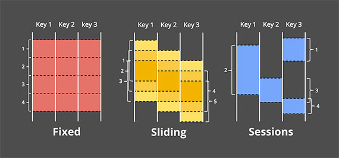
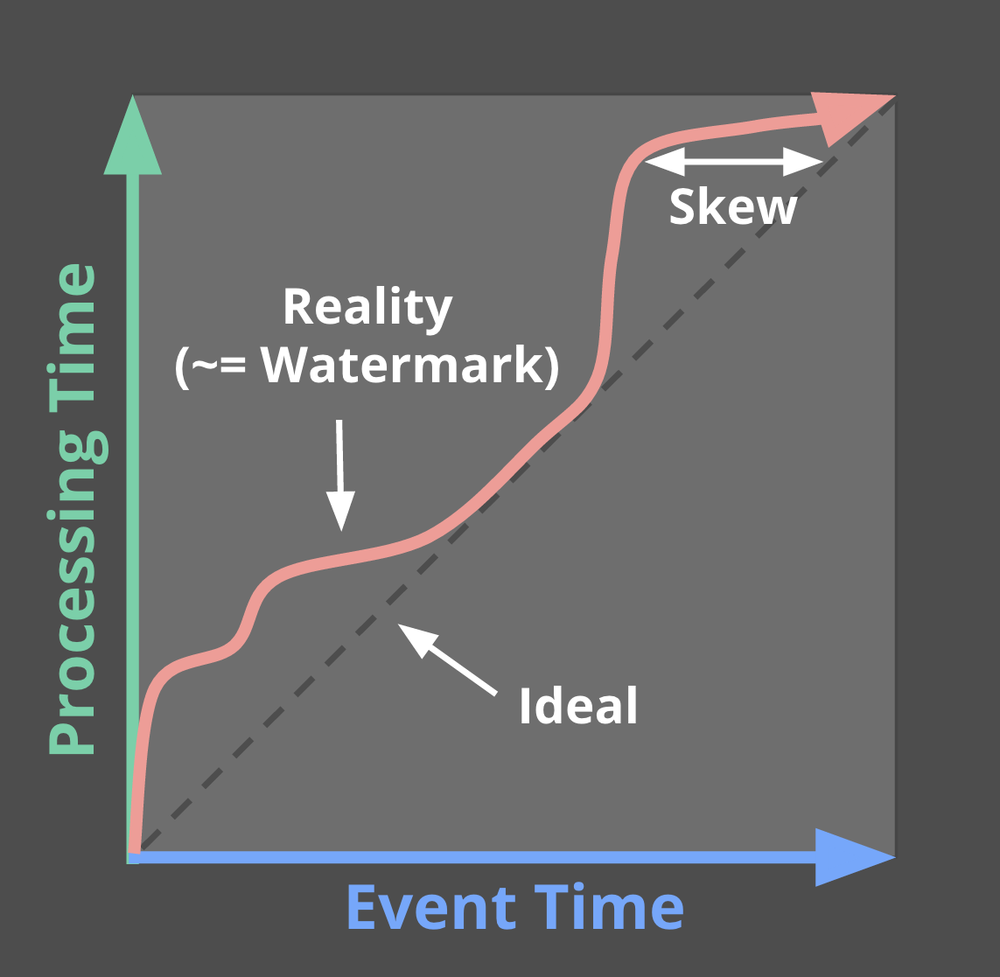

Dataflow 模型(TODO----看论文原文吧)
Flink 实际是 Dataflow 模型的一种实现。
1、“无界”数据
用无界（unbounded）/有界（bounded）替代传统的流式（stream）/批式（batch）数据称谓。 将批处理看作流处理的一个特例。
2、“乱序”数据
由于各种不可避免的延迟，处理无界数据时，记录顺序很可能与原始顺序不同。
3、Dataflow 思路
事件时间（event time）、处理时间（processing time）
3.1、对无界数据问题的分解：
1、需要产生什么结果（what） 2、计算什么时间的数据（where） 3、何时输出结果（when） 4、延迟数据处理（how）
3.2、Dataflow 解决上述问题的方案（Dataflow 三大模型）：
1、窗口模型（windowing model） 支持乱序事件时间的窗口操作——解决 where 问题 2、触发模型（triggering model） 将数据结果与事件时间特性绑定——解决 when 问题 3、增量更新模型（incremental processing model） 将延迟数据融合到窗口模型和触发模型中——解决 how 问题
4、Dataflow 三大模型
4.1、窗口模型
通过窗口就可以将无界数据时域地划分为一个个的有限数据集，进而能在其上做分组、聚合、连接等比较高级的操作。
Dataflow通过窗口模型将传统流处理中的 (key, value) 二元组改进为 (key, value, event_time, window) 四元组。
常见的窗口有三种：固定（fixed/tumbling）窗口、滑动（sliding）窗口、会话（session）窗口。

会话窗口以一个 key 的连续出现作为窗口，如果 key 在一定时间持续不出现，之后再次出现就划分到下一个窗口。
4.2、触发模型
如果使用处理时间作为时间特征，就不需要考虑出发模型——处理时间与窗口边界及数据没关系。采用事件时间时，数据会延迟，窗口边界就会模糊——不知道窗口中的数据是否齐备就无从判断是否可以触发结果计算。所以引入了水印（watermark）的概念。

如果，没有延迟数据、或者对输入数据有完整的感知，水印就是理想的（ideal）；但是，对无界数据源是不可能完整感知输入数据的，所以水印的设定是启发式的（heuristic）——需要根据历史指标尽量保证窗口内数据的完整性，但是无法保证绝对可靠。
4.3、增量更新模型
启发式水印无法保证绝对可靠，所以需要使用迟到数据修正之前窗口——增量更新，也叫作回填（backfill）。Dataflow 的三种回填策略：
- 丢弃（discarding）：窗口触发之后，不在内存中保留窗口数据，所有超过水印（时间）的数据都丢弃。
- 累积（accumulating）：窗口触发过后，保留窗口数据一段时间，超过水印的数据在该时间段内仍然会进入窗口。保留的时间就是允许的迟到时间（allowed lateness）。
- 累积与回撤（accumulating & retracting）：在累积的基础上，先撤回对上一次窗口操作结果的修改，再输出新的结果。这是由某些下游操作决定的，比如下游有累积计数的操作，如果不撤回（减去上一次的结果），本次窗口的结果就错了。